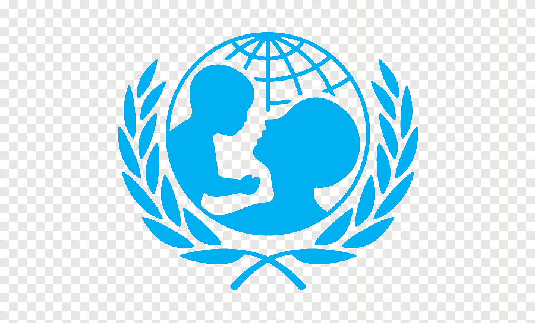

Support Disaster Relief Efforts
Select the type of donation you'd like to make:
Real-Time Impact Tracker
₹ 2.5 CR
raised in total!
■ Disaster Relief Fund
■ Food & Medical Aid
■ Rebuilding Communities
📝 Stories & Testimonials
“Thanks to the donations, we were able to rebuild our house after the floods in Wayanad.”
📍 Rajesh Kumar, Kerala
“The food aid arrived just in time for my family after the cyclone in Odisha.”
📍 Sunita Devi, Odisha
“Generous medical kits helped save lives during the flash floods in Himachal.”
📍 Amit Sharma, Shimla
“Support from Safe Haven helped me start over after the cyclone hits Gujarat coast.”
📍 Meera Patel, Gujarat
“The construction materials provided allowed us to reopen our village school in Bihar.”
📍 Suresh Singh, Patna
“Immediate clean water and sanitation supplies prevented diseases in our camp.”
📍 Kavita Reddy, Andhra Pradesh
Our NGO & Government Partners
 National Disaster Response Force (NDRF)
National Disaster Response Force (NDRF)
 Indian Red Cross Society (IRCS)
Indian Red Cross Society (IRCS)

UNICEF India